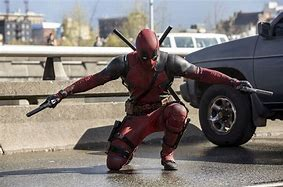

DEADPOOL

Deadpool, também conhecido como Wade Wilson, é um anti-herói da Marvel famoso por seu humor irreverente,
suas habilidades de luta e seu fator de cura acelerado. Originalmente um mercenário, Wade foi submetido
a um experimento que lhe deu poderes regenerativos, mas também o deixou com cicatrizes por todo o corpo
e uma mente instável. Ele se destaca por quebrar a quarta parede, interagindo diretamente com o público
e fazendo piadas constantes. Apesar de seu comportamento caótico e moral duvidosa, Deadpool às vezes age
como herói, principalmente quando envolve pessoas que ele se importa.
VOLTAR